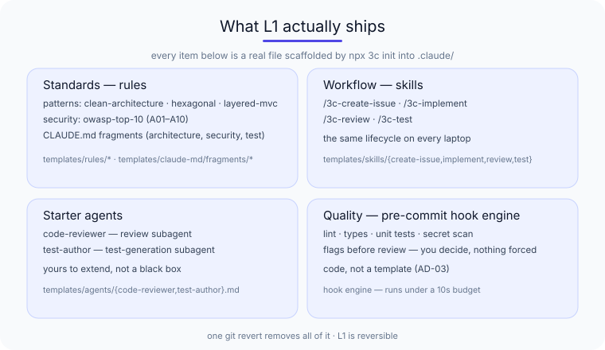
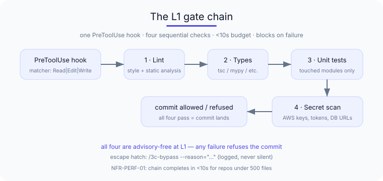
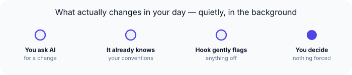

3C — what L1 ships today¶
L1 is the Standardise level: every team member's AI assistant follows the same conventions, the same workflow skills, and the same pre-commit gates. This is the honest scope page — what you get in week one, and what you deliberately do not.
Install¶
npm install git+https://github.com/kgn-git/3C#v1.7.3
npx 3c init
npx 3c init writes .claude/CLAUDE.md (and offers the optional namespace prompt). Then npx 3c rules install, npx 3c hook install, npx 3c skills install, and npx 3c agents install layer in the standards substrate, the pre-commit gate, the workflow skills, and the starter subagents — each copied into your repo under git. Finish with npx 3c doctor to confirm the install is coherent. The one-shot npx 3c setup runs all of it in a single command — full routes (fresh install and update to latest) are on Get started.
Rollback
git revert of one PR removes 3C from your project. The .claude/ tree is plain version-controlled files — no daemon, no global install, no workstation state to unwind.
The 9 L1 features¶
L1 brings nine features across the three layers — each one chosen because it makes a daily difference, not to fill a matrix.

.claude/ — real files, not a roadmap. One git revert removes all of it.Standards layer
- CLAUDE.md Generator — a CLI wizard that produces an optimised
CLAUDE.mdinside the 150-instruction cognitive budget. - Rules Distribution Engine — git-based
.claude/rules/with glob matching and version-controlled sync. - Architecture Pattern Library — pre-built rule sets for Clean Architecture, Hexagonal, and Layered MVC.
- Security Policy Templates — OWASP Top 10 aligned rules for secure code generation.
Workflow layer
- Issue Creation Skill —
/3c-create-issue, structured issue creation. - Feature Implementation Skill —
/3c-implement, the standardised TDD development workflow. - Code Review Skill —
/3c-review, the team review checklist with severities. - Test Generation Skill —
/3c-test, tests following team conventions.
Quality layer
- Pre-Commit Hook Engine — PreToolUse hooks running lint, typecheck, unit tests, and secret scan under a 10-second budget.
The L1 gate chain — what runs before a code review¶
L1 ships with one PreToolUse hook registered in .claude-plugin/plugin.json that runs four checks in sequence before every AI-assisted commit. The whole chain completes in <10s for repos under 500 files (NFR-PERF-01).

/3c-bypass --reason="…" with the reason logged.The four checks, in order:
- Lint — your project's configured linter (ESLint, Pylint, etc.) runs on the touched files. Style and basic static analysis catch the "locally optimal, globally incoherent" patterns that AI assistants produce when six engineers each chase their own taste.
- Types — your project's type-checker (TypeScript
tsc --noEmit, mypy, etc.) runs on the touched files. A passing unit suite over code that does not compile is a lie the test runner tells you. - Unit tests — your project's unit suite runs against the touched modules. The narrowest fast signal — if these fail, nothing downstream runs.
- Secret scan — every file written or edited by an AI session that 3C governs is scanned for credentials before the write lands. Catches accidental commits of AWS access keys, GitHub tokens, database URLs, etc.
L1's hook is blocking. If any of the four checks fails, the commit is refused. This is the conscious L1 trade-off: simple, predictable, no telemetry-driven advisory layer. The escape hatch is /3c-bypass --reason="<one-line>" which logs the bypass and proceeds — but the bypass is recorded, not silent.
What L1 does NOT have¶
The honesty discipline carries over from the rest of this page. L1 is not L2. The following gates ship at L2 and are not part of the L1 hook chain:
- Post-Edit Validation — runs the moment Claude Code finishes an edit (
<300ms), validating imports / naming / architectural-direction rules before the file is even staged. - Coverage Gate — refuses the PR if coverage drops below team thresholds per test type.
- Security Scan Gate — SAST plus dependency-vulnerability scan with severity-thresholded refusal.
- Architecture Boundary Enforcer — static analysis of dependency direction per
.3c/architecture.yaml. - Standards Drift Detector —
/3c-drifton-demand audit of the codebase against current rules, with trend over time.
If you need any of those, the upgrade is one line: npm install git+https://github.com/kgn-git/3C#v1.7.3 then npx 3c init. See what L2 ships today.
The 4 workflow skills¶
Each ships as an Agent Skill at .claude/skills/<name>/SKILL.md. Previews:
# /3c-create-issue
name: create-issue
description: Create structured GitHub issues with team-template
population. User-only skill; not auto-invoked by the model.
# /3c-implement
name: implement
description: Standardised feature-implementation workflow — fetch
issue, plan, branch, TDD-loop, review, PR. Asks for confirmation
before each external-state-changing step. Never auto-merges,
never force-pushes, never bypasses hooks.
# /3c-review
name: review
description: Apply a team-specific static review checklist to the
current branch's diff against main. Read-only, local-only —
structured findings with file/line, severity, suggested fix.
# /3c-test
name: test
description: Generate unit tests following team conventions for
Jest, Vitest, or pytest. Detects framework from package config,
reads conventions from .claude/rules/, respects team patterns.
The pre-commit hook engine¶
One synchronous orchestrator runs every configured gate before a commit lands — lint, typecheck, unit tests, secret scan — inside a 10-second budget on a 500-file repo. A failed gate blocks the commit with a remediation message; an emergency bypass is available and audited. The full delegation chain and gate sequence:

What L1 deliberately does NOT include¶
L1 is intentionally small and reversible. Here's what it deliberately leaves for later — each paired with the level that owns it, so nothing is a surprise:
- No telemetry — that is L2.
- No dashboards — that is L3.
- No audit evidence packs — that is L3.
- No policy-as-code — that is L4.
- No cross-platform adapters — that is L3.
Each capability is paired with the maturity level that owns it. See the maturity model for the portfolio framing and the commitment each level carries.
Where to next¶
- One page for your own reference — Engineer one-pager (PDF), ungated.
- Install — the one-liner above; the full L1→L4 picture is on the maturity model roadmap.
- Championing the rollout? — the engineering-leader page covers cost, reversal, and succession.
- The roadmap — the maturity model shows L1 → L4 as a portfolio plan.
How this is recorded¶
The architecture behind the hook engine and the white-label model is documented in the project's internal architectural decision records. Every claim here is traceable to a reviewed PR in kgn-git/praise — happy to walk an evaluator through it; start a discussion and we'll share what's useful.
What we're learning
The honest scope above is what we believe today. If you try L1 and something is missing that you expected, that's useful signal — tell us.